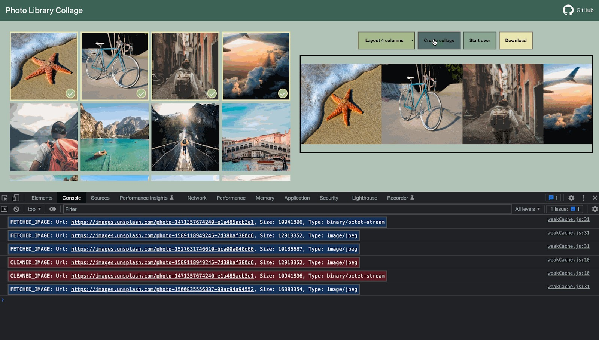
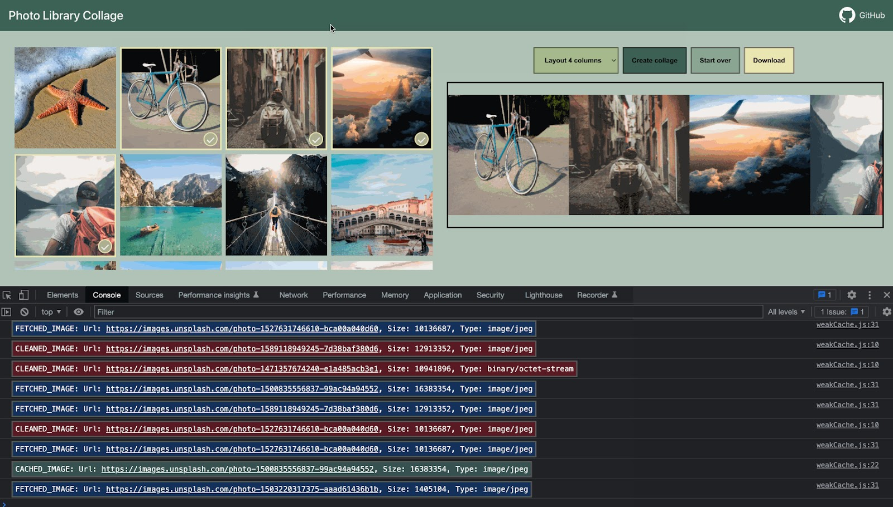

Este artículo trata un tema muy específico que la mayoría de los desarrolladores rara vez encuentran en la práctica, e incluso pueden desconocer su existencia.
Si recién estás aprendiendo JavaScript, te recomendamos saltar este capítulo.
El principio de alcance, explicado en el capítulo Recolección de basura, establece que el motor de JavaScript garantiza que se mantengan en memoria los valores mientras sean accesibles o estén en uso.
Por ejemplo:
// la variable user mantiene una referencia fuerte al objeto
let user = { name: "John" };
// sobrescribimos el valor de la variable user
user = null;
// la referencia se pierde y el objeto será eliminado de la memoriaCompliquemos un poco el código con dos referencias fuertes:
// la variable user mantiene una referencia fuerte al objeto
let user = { name: "John" };
// copiamos la referencia fuerte al objeto en la variable admin
let admin = user;
// sobrescribimos el valor de la variable user
user = null;
// el objeto sigue siendo accesible a través de la variable adminEl objeto { name: "John" } solo se eliminará de la memoria si no quedan referencias fuertes a él; es decir, si también sobrescribimos la variable admin.
En JavaScript existe un concepto llamado WeakRef, o referencia débil, que se comporta de manera diferente.
Referencia fuerte – es una referencia a un objeto o valor que impide que el recolector de basura lo elimine, manteniéndolo en memoria.
Esto significa que el objeto o valor permanecerá en memoria y no será eliminado por el recolector de basura mientras haya referencias fuertes activas a él.
En JavaScript, las referencias típicas son fuertes. Por ejemplo:
// la variable user mantiene una referencia fuerte al objeto
let user = { name: "John" };Referencia débil – es una referencia a un objeto o valor que no impide que sean eliminados por el recolector de basura. Un objeto o valor puede ser borrado por el recolector de basura si las únicas referencias a él son débiles.
WeakRef
Antes de profundizar en el tema, es importante señalar que su uso requiere una planificación cuidadosa y que, en general, es mejor evitarlas si no son estrictamente necesarias.
WeakRef – es un objeto que mantiene referencias débiles a otros objetos, llamados objetivo (target) o referente (referent).
La particularidad de WeakRef es que no impide que el recolector de basura elimine a su “referente”. En otras palabras, un objeto WeakRef no mantiene vivo al objeto referido.
Ahora tomemos la variable user como “referente” y establezcamos una referencia débil hacia ella en la variable admin.
Para crear una referencia débil se debe usar el constructor WeakRef, pasando como argumento el objetivo (el objeto al que queremos hacer la referencia débil).
En nuestro caso, ese objeto es la variable user:
// la variable user mantiene una referencia fuerte al objeto
let user = { name: "John" };
// la variable admin mantiene una referencia débil al objeto
let admin = new WeakRef(user);El siguiente diagrama muestra los dos tipos de referencia: una referencia fuerte con la variable user y una referencia débil con la variable admin:
Luego, en algún momento, dejamos de usar la variable user (su valor se sobrescribe, sale de alcance, etc.), pero la instancia de WeakRef sigue almacenada en la variable admin:
// sobrescribimos el valor de la variable user
user = null;Una referencia débil a un objeto no es suficiente para mantenerlo “vivo”. Si las únicas referencias restantes a un objeto referido son débiles, el recolector de basura puede destruirlo y reutilizar su memoria para otra cosa.
Sin embargo, hasta que el objeto sea realmente eliminado, la referencia débil puede seguir devolviéndolo, incluso si ya no existen referencias fuertes hacia él. Es decir, nuestro objeto se convierte en una especie de “gato de Schrödinger”: no podemos saber con certeza si está “vivo” o “muerto”.
En este punto, para obtener el objeto desde la instancia de WeakRef, usamos su método deref().
El método deref() devuelve el objeto referido al que apunta el WeakRef, si aún está en memoria. Si el objeto ha sido eliminado por el recolector de basura,deref() devolverá undefined:
let ref = admin.deref();
if (ref) {
// el objeto sigue accesible: podemos manipularlo libremente
} else {
// el objeto ha sido eliminado por el recolector de basura
}WeakRef, casos de uso
WeakRef se usa típicamente para crear cachés o arrays asociativos que almacenan objetos con un alto consumo de recursos.
Esto permite evitar que dichos objetos permanezcan en memoria solo por estar en la caché o en un array asociativo…
Uno de los principales ejemplos es cuando manejamos múltiples objetos de imagen binaria (por ejemplo, representados como ArrayBuffer o Blob), y queremos asociarles un nombre o una ruta.
Las estructuras de datos existentes no son del todo adecuadas para esto:
- Usar
Mappara asociar nombres con imágenes (o viceversa) mantiene las imágenes en memoria, ya que siguen presentes en elMapcomo claves o valores. WeakMaptampoco es una opción válida: los objetos usados como claves enWeakMaptienen referencias débiles, por lo que el recolector de basura puede eliminarlos.
En este caso, necesitamos una estructura de datos que use referencias débiles en sus valores.
Para ello, podemos usar una colección Map, donde los valores sean instancias de WeakRef apuntando a los objetos grandes que queremos manejar.
Así, evitamos mantener estos objetos grandes e innecesarios en memoria más tiempo del necesario.
De este modo, si el objeto aún es accesible, podemos obtenerlo desde la caché. Si ha sido eliminado por el recolector de basura, lo regeneramos o lo descargamos nuevamente.
Esto permite reducir el uso de memoria en ciertas situaciones.
Ejemplo №1: Uso de WeakRef para caché
A continuación, se muestra un fragmento de código que demuestra el uso de WeakRef.
En resumen, utilizamos un Map con claves de tipo string y objetos WeakRef como valores.
Si el objeto referenciado por WeakRef no ha sido eliminado por el recolector de basura, lo recuperamos de la caché.
Caso contrario, lo descargamos nuevamente y lo almacenamos en la caché para su posible reutilización:
function fetchImg() {
// función abstracta para descargar imágenes...
}
function weakRefCache(fetchImg) { // (1)
const imgCache = new Map(); // (2)
return (imgName) => { // (3)
const cachedImg = imgCache.get(imgName); // (4)
if (cachedImg?.deref()) { // (5)
return cachedImg?.deref();
}
const newImg = fetchImg(imgName); // (6)
imgCache.set(imgName, new WeakRef(newImg)); // (7)
return newImg;
};
}
const getCachedImg = weakRefCache(fetchImg);Analicemos en detalle lo que ocurre aquí:
weakRefCache– es una función de orden superior que recibe otra función,fetchImg, como argumento. En este ejemplo, no es necesario describirfetchImgen detalle, ya que puede ser cualquier lógica para descargar imágenes.imgCache– es una caché de imágenes que almacena los resultados defetchImgen unmap, con claves de tipostringpara los nombres de las imágenes y objetosWeakRefcomo valores.- Se devuelve una función anónima que toma el nombre de la imagen como argumento. Este argumento se usa como clave en la caché.
- Se intenta obtener el resultado almacenado en caché usando la clave proporcionada.
- Si la caché contiene un valor para la clave especificada y el objeto referenciado por
WeakRefaún existe, se devuelve el resultado en caché. - Si no hay una entrada en la caché con la clave solicitada, o si
deref()devuelveundefined(lo que significa que el objeto ha sido eliminado por el recolector de basura), se vuelve a descargar la imagen confetchImg. - La imagen descargada se almacena en la caché como un objeto
WeakRef.
Ahora tenemos una colección Mapdonde las claves son string con los nombres de imágenes y los valores son objetos WeakRef que contienen las imágenes.
Esta técnica ayuda a evitar la asignación innecesaria de grandes cantidades de memoria a objetos que ya no están en uso. Pero también ahorra memoria y tiempo cuando se reutilizan objetos en caché.
Aquí hay una representación visual de este código:
Sin embargo, esta implementación tiene una desventaja: con el tiempo, Map se llenará de claves string que apuntan a WeakRef cuyos objetos referenciados ya han sido eliminados por el recolector de basura:
Una forma de manejar este problema es limpiar periódicamente la caché para eliminar las entradas “muertas”. Otra opción es usar finalizadores, que exploraremos a continuación.
Ejemplo №2: Usando WeakRef para rastrear objetos del DOM
Otro caso de uso de WeakRef es rastrear objetos del DOM.
Imaginemos un escenario en el que un código o biblioteca de terceros interactúa con elementos de nuestra página mientras existan en el DOM. Por ejemplo, podría ser una utilidad externa que monitorea y notifica el estado del sistema (comúnmente llamada “logger”, un programa que envía mensajes informativos llamados “logs”).
Ejemplo interactivo:
const startMessagesBtn = document.querySelector('.start-messages'); // (1)
const closeWindowBtn = document.querySelector('.window__button'); // (2)
const windowElementRef = new WeakRef(document.querySelector(".window__body")); // (3)
startMessagesBtn.addEventListener('click', () => { // (4)
startMessages(windowElementRef);
startMessagesBtn.disabled = true;
});
closeWindowBtn.addEventListener('click', () => document.querySelector(".window__body").remove()); // (5)
const startMessages = (element) => {
const timerId = setInterval(() => { // (6)
if (element.deref()) { // (7)
const payload = document.createElement("p");
payload.textContent = `Message: System status OK: ${new Date().toLocaleTimeString()}`;
element.deref().append(payload);
} else { // (8)
alert("The element has been deleted."); // (9)
clearInterval(timerId);
}
}, 1000);
};.app {
display: flex;
flex-direction: column;
gap: 16px;
}
.start-messages {
width: fit-content;
}
.window {
width: 100%;
border: 2px solid #464154;
overflow: hidden;
}
.window__header {
position: sticky;
padding: 8px;
display: flex;
justify-content: space-between;
align-items: center;
background-color: #736e7e;
}
.window__title {
margin: 0;
font-size: 24px;
font-weight: 700;
color: white;
letter-spacing: 1px;
}
.window__button {
padding: 4px;
background: #4f495c;
outline: none;
border: 2px solid #464154;
color: white;
font-size: 16px;
cursor: pointer;
}
.window__body {
height: 250px;
padding: 16px;
overflow: scroll;
background-color: #736e7e33;
}<!DOCTYPE HTML>
<html lang="en">
<head>
<meta charset="utf-8">
<link rel="stylesheet" href="index.css">
<title>WeakRef DOM Logger</title>
</head>
<body>
<div class="app">
<button class="start-messages">Start sending messages</button>
<div class="window">
<div class="window__header">
<p class="window__title">Messages:</p>
<button class="window__button">Close</button>
</div>
<div class="window__body">
No messages.
</div>
</div>
</div>
<script type="module" src="index.js"></script>
</body>
</html>Cuando se hace clic en el botón “Iniciar envío de mensajes”, comienzan a aparecer mensajes (logs) en la llamada “ventana de visualización de logs” (un elemento con la clase .window__body).
Sin embargo, tan pronto como este elemento es eliminado del DOM, el logger debería dejar de enviar mensajes. Para simular la eliminación de este elemento, simplemente haz clic en el botón “Cerrar” en la esquina superior derecha.
Para evitar la necesidad de notificar al código externo cada vez que nuestro elemento DOM está disponible o no, podemos simplemente crear una referencia débil con WeakRef.
Una vez que el elemento es eliminado del DOM, el logger lo detectará y dejará de enviar mensajes.
Ahora veamos en detalle el código fuente (pestaña index.js):
-
Obtener el elemento DOM del botón “Iniciar envío de mensajes”.
-
Obtener el elemento DOM del botón “Cerrar”.
-
Obtener el elemento DOM de la ventana de logs usando el constructor
new WeakRef(). De esta manera, la variablewindowElementRefmantiene una referencia débil al elemento del DOM. -
Agregar un event listener al botón “Iniciar envío de mensajes”, que inicia el logger cuando se hace clic.
-
Agregar un event listener al botón “Cerrar”, que elimina la ventana de logs del DOM cuando se hace clic.
-
Usar
setIntervalpara mostrar un nuevo mensaje cada segundo. -
Si el elemento DOM de la ventana de logs sigue disponible en memoria, crear y enviar un nuevo mensaje.
-
Si el método
deref()devuelveundefined, significa que el elemento DOM ha sido eliminado de la memoria. En este caso, el logger deja de mostrar mensajes y se limpia el temporizador. -
Mostrar un
alert, cuando el elemento DOM de la ventana de logs haya sido eliminado de la memoria (es decir, después de hacer clic en el botón “Cerrar”). Nota: La eliminación de la memoria puede no ocurrir de inmediato, ya que depende únicamente de los mecanismos internos del recolector de basura.No podemos controlar este proceso directamente desde el código. Sin embargo, aún es posible forzar la recolección de basura en el navegador.
En Google Chrome, por ejemplo, para hacer esto, abre las herramientas para desarrolladores (Ctrl + Shift + J en Windows/Linux o Option + ⌘ + J en macOS), ve a la pestaña “Performance” y haz clic en el ícono de la papelera – “Collect garbage”:

Esta funcionalidad está disponible en la mayoría de los navegadores modernos. Después de realizar estos pasos, elalertse activará inmediatamente.
FinalizationRegistry
Es momento de hablar sobre los finalizadores. Aclaremos la terminología antes de continuar:
Callback de limpieza (finalizador) – es una función que se ejecuta cuando un objeto registrado en FinalizationRegistry es eliminado de la memoria por el recolector de basura.
Su propósito es permitir realizar operaciones adicionales relacionadas con el objeto después de que haya sido eliminado de la memoria.
Registro (o FinalizationRegistry) – es un objeto especial en JavaScript que gestiona el alta y la eliminación de objetos referent junto con sus callbacks de limpieza.
Este mecanismo permite registrar un objeto para rastrearlo y asociarle un callback de limpieza. Básicamente, es una estructura que almacena información sobre los objetos registrados y sus callbacks de limpieza, y luego los invoca automáticamente cuando los objetos son eliminados de la memoria.
Para crear una instancia de FinalizationRegistry, se debe llamar a su constructor, el que recibe un solo argumento: el callback de limpieza (el finalizador).
Sintaxis:
function cleanupCallback(heldValue) {
// código del callback de limpieza
}
const registry = new FinalizationRegistry(cleanupCallback);Donde:
cleanupCallback– es la función que se ejecutará automáticamente cuando un objeto registrado sea eliminado de la memoria.heldValue– es el valor que se pasará como argumento al callback de limpieza. SiheldValuees un objeto, el registro mantiene una referencia fuerte a él.registry– es la instancia deFinalizationRegistry.
Métodos de FinalizationRegistry:
-
register(target, heldValue [, unregisterToken])– registra un objeto en el registro.target– el objeto a registrar. Sitargetes recolectado por el recolector de basura, el callback de limpieza se ejecutará conheldValuecomo argumento.Opcional
unregisterToken– un token de desregistro. Se puede usar para anular el registro de un objeto antes de que el recolector de basura lo elimine. Por convención, suele ser el mismotarget. -
unregister(unregisterToken)– elimina un objeto del registro. Recibe un argumento:unregisterToken(el token usado al registrar el objeto).
Veamos un ejemplo. Usemos el ya conocido objeto user y creemos una instancia de FinalizationRegistry:
let user = { name: "John" };
const registry = new FinalizationRegistry((heldValue) => {
console.log(`${heldValue} ha sido recolectado por el recolector de basura.`);
});Luego, registramos el objeto que requiere limpieza llamando al método register:
registry.register(user, user.name);El registro no mantiene una referencia fuerte al objeto, ya que eso impediría que el recolector de basura lo eliminara.
Si el objeto es eliminado por el recolector de basura, el callback de limpieza puede ejecutarse en algún momento futuro con el heldValue pasado como argumento:
// Cuando el objeto user sea eliminado, se imprimirá en la consola:
"John ha sido recolectado por el recolector de basura."Hay casos donde el callback tiene posibilidades de no ejecutarse.
Por ejemplo:
- Cuando el programa termina por completo su operación (por ejemplo, al cerrar una pestaña en el navegador).
- Cuando la instancia de
FinalizationRegistrymismo deja de estar accesible en el código. Si el objeto que creó la instancia deFinalizationRegistrysale del ámbito o es eliminado, los callbacks de limpieza registrados en tal registro podrían no ser invocados.
Caché con FinalizationRegistry
Volviendo a nuestro ejemplo de caché débil, podemos notar lo siguiente:
- Aunque los valores envueltos en
WeakRefhayan sido recolectados por el recolector de basura, sigue existiendo un problema de “fuga de memoria” debido a las claves restantes cuyos valores han sido eliminados.
Esta es una versión mejorada de la caché usando FinalizationRegistry:
function fetchImg() {
// función abstracta para descargar imágenes...
}
function weakRefCache(fetchImg) {
const imgCache = new Map();
const registry = new FinalizationRegistry((imgName) => { // (1)
const cachedImg = imgCache.get(imgName);
if (cachedImg && !cachedImg.deref()) imgCache.delete(imgName);
});
return (imgName) => {
const cachedImg = imgCache.get(imgName);
if (cachedImg?.deref()) {
return cachedImg?.deref();
}
const newImg = fetchImg(imgName);
imgCache.set(imgName, new WeakRef(newImg));
registry.register(newImg, imgName); // (2)
return newImg;
};
}
const getCachedImg = weakRefCache(fetchImg);-
Para gestionar la limpieza de las entradas “muertas” de la caché cuando los objetos
WeakRefson eliminados por el recolector de basura, creamos un registro de limpieza conFinalizationRegistry.Es importante comprobar en el callback de limpieza si la entrada fue eliminada por el recolector y no ha sido reinsertada, para evitar borrar una entrada “viva”.
-
Una vez que se descarga una nueva imagen y se almacena en la caché, la registramos en el
FinalizationRegistrypara rastrear el objetoWeakRef.
Esta implementación solo mantiene pares clave/valor realmente “vivos”.
En este caso, cada objeto WeakRef se registra en FinalizationRegistry.
Y después de que los objetos sean eliminados por el recolector de basura, el callback de limpieza eliminará todas las entradas undefined.
Aquí la representación visual del código actualizado:
Un aspecto clave de esta implementación es que los finalizadores permiten la ejecución en paralelo entre el programa principal y los callbacks de limpieza. En el contexto de JavaScript, el “programa principal” es el código JavaScript que se ejecuta en nuestra aplicación o página web.
Por lo tanto, desde el momento en que un objeto es marcado para eliminación por el recolector de basura hasta que el callback de limpieza se ejecuta, puede haber un cierto lapso. Es importante entender que, durante este tiempo, el programa principal puede modificar el objeto o incluso restaurarlo en la memoria.
Por eso, en el callback de limpieza debemos verificar si la entrada ha sido agregada nuevamente a la caché para evitar eliminar valores “vivos”. Del mismo modo, al buscar una clave en la caché, existe la posibilidad de que su valor haya sido eliminado por el recolector de basura, pero el callback de limpieza aún no se haya ejecutado.
Estas situaciones requieren especial atención si trabajas con FinalizationRegistry.
Uso de WeakRef y FinalizationRegistry en la práctica
Pasando de la teoría a la práctica, imaginemos un escenario real en el que un usuario sincroniza sus fotos en un dispositivo móvil con un servicio en la nube (como iCloud o Google Photos), y quiere verlas desde otros dispositivos. Además de la funcionalidad básica de visualización, estos servicios ofrecen características adicionales como:
- Edición de fotos y efectos de video.
- Creación de “recuerdos” y álbumes.
- Montajes de video a partir de una serie de fotos.
- … y mucho más.
Aquí, como ejemplo, usaremos una implementación bastante primitiva de un servicio similar.
El objetivo principal es mostrar un posible escenario en el que WeakRef y FinalizationRegistry se utilicen juntos en una aplicación real.
Así es como se ve:

A la izquierda, hay una biblioteca de fotos en la nube (mostradas como miniaturas). Podemos seleccionar imágenes y crear un collage haciendo clic en el botón "Crear collage" en la derecha. Luego, el collage resultante se puede descargar como una imagen.
Para acelerar la carga de la página, lo lógico es descargar y mostrar las miniaturas en calidad comprimida, pero al crear el collage, descargar y usar las imágenes en calidad completa.
Las miniaturas tienen un tamaño de 240x240 píxeles. Este tamaño se eligió intencionalmente para optimizar la velocidad de carga. En el modo de vista previa, tampoco necesitamos imágenes en tamaño completo.

Supongamos que queremos crear un collage con 4 fotos. Las seleccionamos y hacemos clic en "Crear collage". Aquí, la ya conocida función
weakRefCache verifica si la imagen requerida está en caché.
Si no lo está, la descarga desde la nube y la almacena para futuros usos.
Esto ocurre para cada imagen seleccionada:

Al observar la consola podemos ver qué fotos fueron descargadas desde la nube, indicadas por FETCHED_IMAGE. Como es la primera vez que se crea el collage, la “caché débil” estaba vacía, así que todas las imágenes se descargaron de la nube.
Pero al mismo tiempo el recolector de basura está limpiando la memoria. Esto significa que las imágenes almacenadas con referencias débiles pueden ser eliminadas. Cuando esto sucede, nuestro finalizador borra la clave correspondiente de la caché. CLEANED_IMAGE nos lo notifica:

Después, nos damos cuenta de que no nos gusta el collage y decidimos cambiar una de las imágenes. Para esto, desmarcamos una, seleccionamos otra y hacemos clic en "Crear collage" de nuevo:

Pero esta vez, no todas las imágenes se descargaron de la red, algunas se obtuvieron de la caché débil, como indica el mensaje CACHED_IMAGE. Esto significa que el recolector de basura aún no eliminó algunas imágenes, lo que reduce el número de descargas y acelera el proceso de creación del collage.

Juguemos un poco más. Volvamos a cambiar otra imagen y creemos un nuevo collage:

Esta vez, el resultado es aún mejor. De las 4 imágenes seleccionadas, 3 fueron recuperadas de la caché débil y solo una tuvo que descargarse. La reducción en el uso de la red fue del 75%. Nada mal.

Es importante recordar que este comportamiento no está garantizado y depende de la implementación específica del recolector de basura.
Dicho esto, surge una pregunta lógica: ¿por qué no usar una caché normal, que podamos gestionar manualmente en lugar de depender del recolector de basura?
En la mayoría de los casos, no hay necesidad de usar WeakRef y FinalizationRegistry.
Aquí simplemente demostramos una alternativa con un enfoque diferente y características interesantes del lenguaje. Sin embargo, este ejemplo no es fiable si necesitamos resultados constantes y predecibles.
Puedes abrir este ejemplo en el sandbox..
Resumen
WeakRef – está diseñado para crear referencias débiles a objetos, lo que permite que el recolector de basura los elimine si no hay referencias fuertes a ellos.
Esto habilita al motor de JavaScript optimizar el uso de memoria y recursos del sistema.
FinalizationRegistry – permite registrar callbacks que se ejecutan cuando un objeto sin referencias fuertes es eliminado.
Esto permite liberar manualmente recursos asociados al objeto o realizar tareas de limpieza adicionales antes de que el objeto desaparezca de la memoria.
Comentarios
<code>, para varias líneas – envolverlas en la etiqueta<pre>, para más de 10 líneas – utilice una entorno controlado (sandbox) (plnkr, jsbin, codepen…)